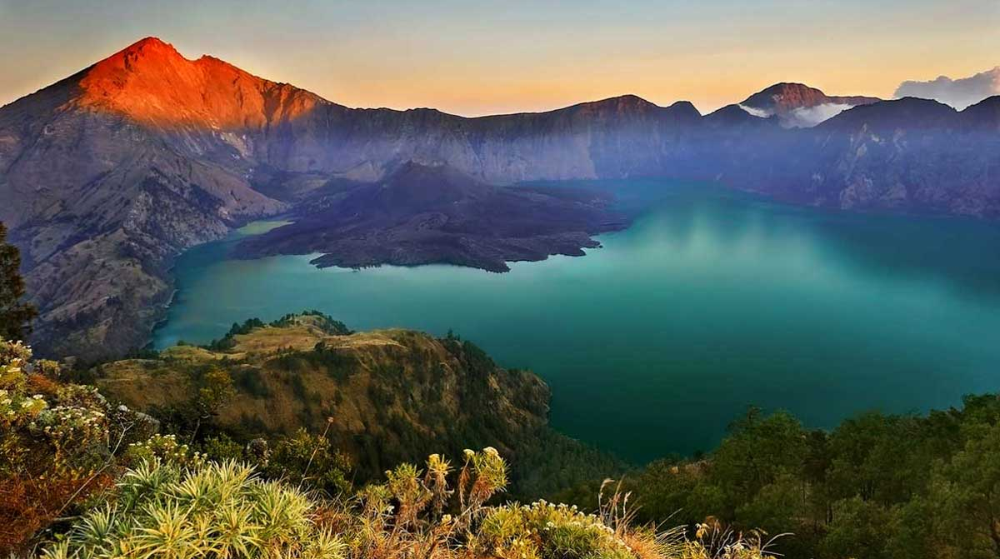

Nusantara's Mountains

Nusantara's Beach
Nusantara's Waterfalls
Nusantara's Mountains
Nusantara's Beach
Nusantara's Waterfalls
News
15 Wisata Alam di Semarang, Cocok untuk Libur Panjang
Manggarai Timur NTT Kembangkan Wisata Air Panas
6 Persiapan Trekking buat Pemula, Jangan Langsung Berangkat